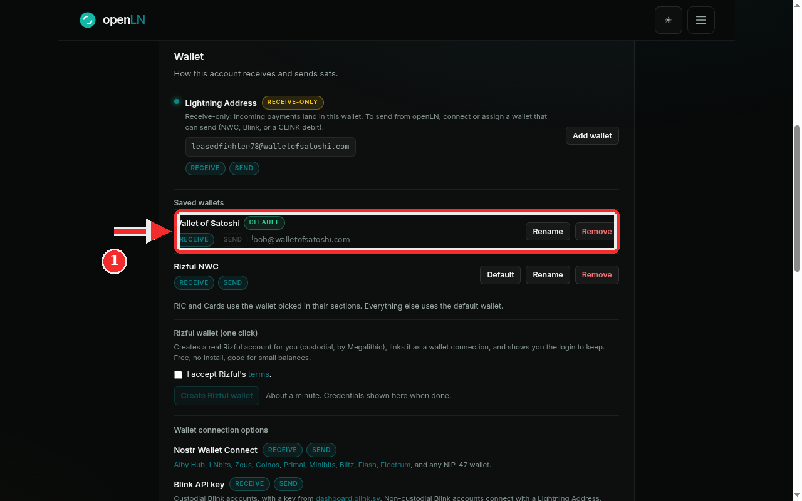
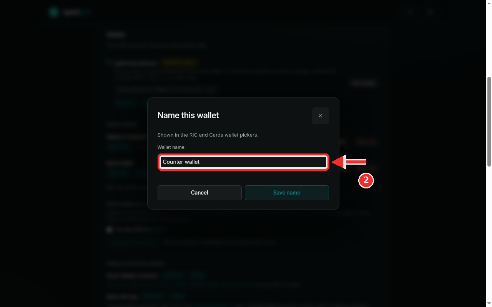
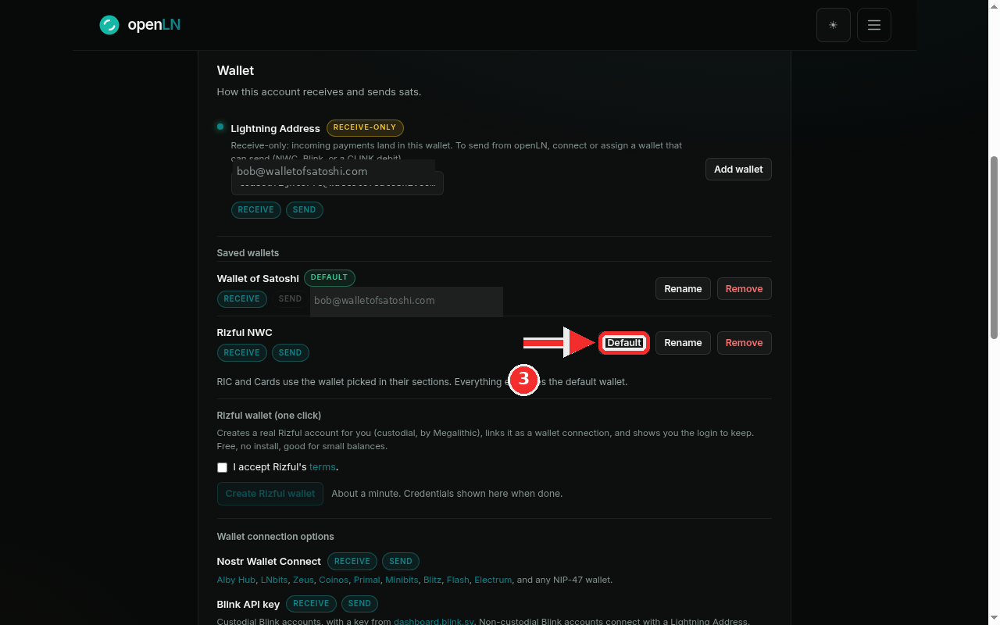
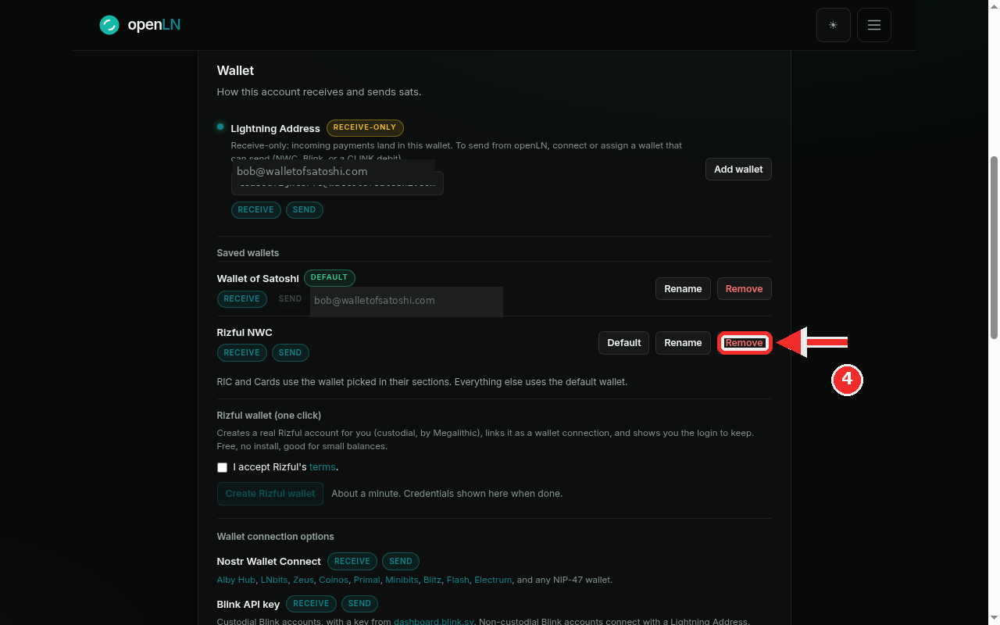

How to rename, set a default, and remove a saved wallet
This guide covers the housekeeping side of your wallets. Once more than one wallet is saved to your openLN account, the Saved wallets list is where you keep things tidy: give a connection a name you recognize, move the account default to a different wallet, and remove a wallet you no longer use. Nothing here moves money or costs anything; it is list management, and it all happens in Settings. Each of the three actions takes a few seconds.
- You are signed in to your openLN account (any device, phone or computer).
- You have at least two wallets saved. openLN always keeps one wallet on file so the account can receive, so the last remaining wallet cannot be removed. The app refuses it with a message.
- You know which wallet should end up as the default: the one new payments use unless a feature picks its own.
- Nothing is charged during any of this and no funds move.
Open Saved wallets and read the list
Go to Settings and find the Wallet card, the one that starts with "How this account receives and sends sats". Under the account's active wallet you will find the Saved wallets list. Every wallet you have ever connected is one row there.
Each row shows the wallet's name, capability chips that say whether it can Receive and Send (a lit chip means yes, a dimmed chip means no), a Default pill on the wallet everything uses, the wallet's address when it has one, and the buttons Default, Rename and Remove. One detail to internalize: the Default button is not shown on the row that already is the default, because there is nothing to switch.
The highlighted row in the screenshot is a Wallet of Satoshi connection named Wallet of Satoshi. It carries the Default pill, its Receive chip is on and its Send chip is off (Wallet of Satoshi can only receive), and it shows its address, for example bob@walletofsatoshi.com. The row below, Rizful NWC, can both receive and send, so it has all three buttons: Default, Rename and Remove. A wallet that a feature has picked can also carry a small used-by pill, for example RIC receive or Cards send.
Under the list openLN prints the rule the rest of the app follows: "RIC and Cards use the wallet picked in their sections. Everything else uses the default wallet." Keep that sentence in mind for the next two steps.

Rename a wallet in the "Name this wallet" dialog
Press Rename on the row you want to rename. A small dialog titled Name this wallet opens. It says "Shown in the RIC and Cards wallet pickers" and its Wallet name field arrives pre-filled with the current name, so you are editing, not starting from scratch.
Replace the text with the name you want. Names can be up to 40 characters. In the screenshot the name has been changed to Counter wallet; once saved, that is how the connection is listed here and how it appears in the RIC and Cards wallet pickers, so pick something the person at the counter will recognize.
Press Save name to keep it, or Cancel to leave the old name. The list repaints with the new name and a "Wallet name saved" message appears. An empty name is refused ("Wallet name cannot be empty"), and you can rename the same wallet again whenever you like. openLN names each new connection after the provider it declares (for example "Rizful NWC" or "Coinos NWC"), so renaming is only needed when you want something more personal.

Make another wallet the default
Press Default on the row that should become the account default. In the screenshot the Default button is highlighted on the Rizful NWC row, which is not the default yet; the "Wallet of Satoshi" row above already carries the Default pill and has no Default button.
Pressing it makes that wallet the account default for new payments: any part of openLN that has no wallet of its own picks this one, so new receives and sends follow it at once. A "Default wallet updated" message confirms, the Default pill moves to the new row, and the old default gets its Default button back.
Nothing changes behind your back. A wallet becomes the default only when you press this button; adding a wallet never replaces the default on its own. And RIC and Cards are the exception to "everything else": each of those features uses the wallet picked in its own section, so moving the default does not change what a feature is already using. To make a feature follow the default again, clear its picker (the first option there, "Default wallet", does exactly that). That is covered in those sections' own guides.

Remove a wallet you no longer use
Press Remove on the row (it is the red-text button). This is the destructive one, so openLN checks first: if this is your last saved wallet, it refuses with the message "Add another wallet before removing this one." The account always keeps one wallet on file so it can receive at any time.
With another wallet saved, the browser opens its own confirmation popup. This is a plain system dialog shown by your browser, not a window drawn by openLN, so it looks different from the rest of the app and it cannot be captured in a screenshot. It reads "Remove this wallet connection? You can add it again any time." Confirm it and the wallet leaves the list with a "Wallet removed" message.
If the wallet is a Rizful one, the popup says the Rizful account and your login stay yours, and the Rizful card below Saved wallets will offer Re-link this wallet when the saved details are still on file, so you can bring it back later without creating a new account.
What removal does, exactly: the saved connection itself is deleted, so re-adding it later means pasting the key, string or address again (Rizful rows have the re-link shortcut instead). Any RIC or Cards assignment that pointed at the removed wallet is cleared, and those slots follow the default again. Your books and payment history are untouched: removal never deletes past sales or sends, and a payment already in flight keeps the wallet it started with.

- Removing the last wallet is refused. openLN always keeps one wallet on file so the account can receive at any time. To get rid of that wallet, connect another one first and then remove it.
- RIC and Cards keep their own choice. They use the wallet picked in their own sections, not automatically the default. Removing a wallet they were using clears that pick, and the slot falls back to the default.
- The remove confirmation is the browser's. It is a system popup, so read it and only confirm when you are sure; there is no second chance dialog after it.
- Nothing here moves funds. Renaming, setting a default and removing a wallet are record keeping for openLN. Your sats stay in the wallet you connected; openLN never takes custody of them.